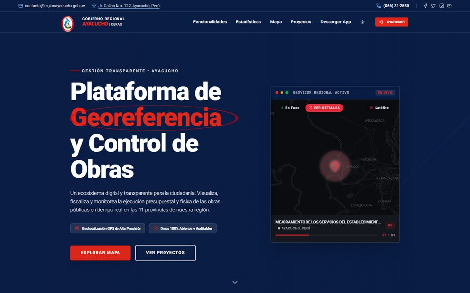

Sistema de Supervisión
Obras públicas de 11 provincias en un mapa en vivo, con app móvil para campo.
Plataforma de georreferencia y control de obras: mapa con relieve 3D, expediente técnico, dashboards de avance físico y presupuestal y API de datos abiertos.
App móvil en Flutter para supervisores y personal de obra: mapas Mapbox, GPS, fotos de avance desde campo y asistencia, con inicio de sesión SSO.
Lideré su desarrollo.
Go
Next.js
Flutter
Mapbox
PostgreSQL
MinIO
Kafka
Docker
Traefik